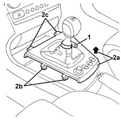
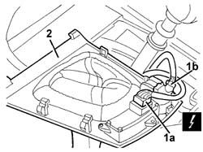
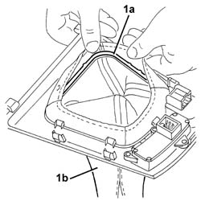
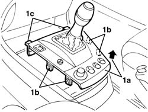
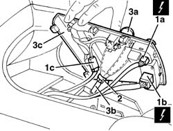
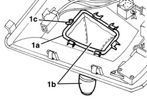

7040L37 gear lever plate - r r
- Path
- Procedures > 70 FITTINGS > 7040 BODYSHELL INTERIOR TRIMS AND FITTINGS > 7040L cabin floor covering > 7040L37 gear lever plate - r r
- Kind
- repair procedure (removal / refitting; the operation number is the code)
- Applies to
- all engines; all production periods
- Interactive page
- https://sloeber94.github.io/elrnDB-a156/en/#/3238852
Applies to: all engines; production: da 03/02 a 09/03, da 10/03
 Removing
Removing
 Refitting
Refitting1. Disconnect the gear lever boot retaining button.
2. Lift up the rear part (2a) of the surround and release the side retainers (2b) and then the front retainers (2c).

Applies to: all engines; production: da 03/02 a 09/03, da 10/03
1. Fold the surround over and disconnect the electrical connections. (1a) and (1b).
 | Name | Connector |
|---|---|---|
1a | Switches assembly on central console |
| Name | Connector |
|---|---|---|
1b | Adjustable mirror control |
2. Keep the gear lever surround.

Applies to: all engines; production: da 03/02 a 09/03, da 10/03
1. If necessary, release the inner frame (1a) from the retainers and remove the boot (1b).

Applies to: all engines; production: da 03/02 a 09/03, da 10/03
If necessary, 5540D18 fog lamp switch - r+r
If necessary, 7005R40 rear view mirror-s and door mirror-s positioning switch unit - r r
Applies to: all engines; production: da 03/02 a 09/03, da 10/03
Refitting
RemovingCheck that the gear lever surround is not damaged.
If necessary, 7005R40 rear view mirror-s and door mirror-s positioning switch unit - r r
If necessary, 5540D18 fog lamp switch - r+r
If removed, place the boot in position and fit the inner frame on the retainers.
Connect the electrical connections to the gear lever surround.
Fit the surround in place and engage the retainers.
Connect the gear lever boot retaining button.
Applies to: all engines; production: da 03/02 a 09/03, da 10/03; only with equipment: Smart gearbox
Removing
Refitting1. Lift up the rear part (1a) of the surround and release the retainers (1b) and then (1c).

Applies to: all engines; production: da 03/02 a 09/03, da 10/03; only with equipment: Smart gearbox
1. Raise the trim and disconnect the electrical connections. (1a, 1b, 1c).
| Name | Connector |
|---|---|---|
1a | Adjustable mirror control |
| Name | Connector |
|---|---|---|
1b | Switches assembly on central console |
| Name | Connector |
|---|---|---|
1c | CITY function switch |
2. Loosen the band.
3. Release the grip (3a) from the gear lever (3b) and keep it with the gear lever surrounding trim (3c).

Applies to: all engines; production: da 03/02 a 09/03, da 10/03; only with equipment: Smart gearbox
1. If necessary, release the inner frame (1a) from the retainers and remove the boot and grip (1b).

Applies to: all engines; production: da 03/02 a 09/03, da 10/03; only with equipment: Smart gearbox
If necessary, 5540D18 fog lamp switch - r+r
If necessary, 7005R40 rear view mirror-s and door mirror-s positioning switch unit - r r
If necessary, 2127E30 auto function selection key of hydraulic gearbox r r
Applies to: all engines; production: da 03/02 a 09/03, da 10/03; only with equipment: Smart gearbox
Refitting
RemovingCheck that the gear lever surround is not damaged.
Refit any components that have been removed.
If removed, place the boot and grip in position and fit the inner frame on the retainers.
Fit the grip on the gear lever and fasten it using the band.
Connect the electrical connections to the gear lever surround.
Fit the surround in place and engage the retainers.
Topics linked from this page (6)
- 2127E30 auto function selection key of hydraulic gearbox r r
- 5540D18 fog lamp switch - r+r
- 7005R40 rear view mirror-s and door mirror-s positioning switch unit - r r
- H30 Adjustable mirror control
- H35 Switches assembly on central console
- H39 CITY function switch
Topics that link to this page (25)
- 2127A12 hand lever of manual gearbox with hydraulic selection - r r
- 2127A16 panel of control lever for manual gearbox with hydraulic selection - r r
- 2127A20 cover of control lever/handle for manual gearbox with hydraulic selection - r r
- 2127A70 support for control levers for manual gearbox with hydraulic selection and handbrake - r r
- 5010C24 upper air outlet on facia - r r
- 5010D30 passenger compartment air temperature sensor - r+r following electrical wiring check operation
- 5020L10 additional heater system boiler - r r
- 5040B30 expansion valve (tube orifice) - r+r
- 5040C10 air conditioner box - r+r
- 5040C50 air conditioner heater radiator - r+r
- 5040D18 air conditioner control unit - r r
- 5040D52 air inlet and recirculation flap actuator - r r
- 5040D76 air contitioner distribution flap control motor - r r
- 5040D84 air conditioner left hand air mixer flap control motor - r r
- 5040D86 air conditioner right hand air mixer flap control motor - r r
- 5040D90 air conditioner system wiring bundle - r r
- 5540D18 fog lamp switch - r+r
- 5560C51 combined analogue control panel - r+r or replace
- 5560C64 electronic unit(infocentre) - replace after checking operation with special equipment
- 7005R40 rear view mirror-s and door mirror-s positioning switch unit - r r
- 7040A10 instrument facia trim - r+r
- 7040A25 central facia trim - r r
- 7040A97 facia trim support beam - r r
- 7040L10 cabin floor carpet - r r
- 7040L20 tunnel trim - r r